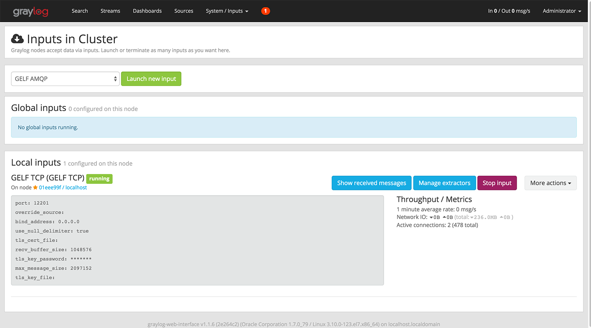

Installation¶
在本节中，您将了解如何在服务端部署所有 Logful 所需的组件，并将组件正确连接起来。在正式部署服务前，确保您已经对 Logful 日志系统架构有了充分了解。建议先阅读 Logful 的介绍后，再开始部署工作。
部署流程包括：
- Graylog 部署
- WeedFS 部署
- Logful API 服务部署
- Logful Web 服务部署
Graylog 部署¶
以 CentOS 7 使用 yum 安装 Graylog-1.2 版本为例：
安装 graylog-server 和 graylog-web¶
$ sudo rpm -Uvh https://packages.graylog2.org/repo/packages/graylog-1.2-repository-el7_latest.rpm
$ sudo yum install graylog-server graylog-web
安装 Elasticsearch¶
graylog-server 要求 Elasticsearch 版本为 1.7 及以上（2.x 暂时不支持）。
$ sudo rpm --import https://packages.elastic.co/GPG-KEY-elasticsearch
$ sudo vim /etc/yum.repos.d/elasticsearch.repo
[elasticsearch-1.7]
name=Elasticsearch repository for 1.7.x packages
baseurl=http://packages.elastic.co/elasticsearch/1.7/centos
gpgcheck=1
gpgkey=http://packages.elastic.co/GPG-KEY-elasticsearch
enabled=1
$ yum install elasticsearch
安装 MongoDB¶
graylog-server 要求尽可能使用稳定版本，且版本至少为 v2.0。
$ sudo vim /etc/yum.repos.d/mongodb-org-3.0.repo
[mongodb-org-3.0]
name=MongoDB Repository
baseurl=https://repo.mongodb.org/yum/redhat/$releasever/mongodb-org/3.0/x86_64/
gpgcheck=0
enabled=1
$ sudo yum install -y mongodb-org
配置 graylog-server 和 graylog-web¶
$ pwgen -N 1 -s 96
PASSWORD_SECRET
$ echo -n getui2015! | sha256sum
PASSWORD_SHA
$ sudo vim /etc/graylog/server/server.conf
password_secret = PASSWORD_SECRET
root_password_sha2 = PASSWORD_SHA
root_timezone = Asia/Shanghai
$ sudo vim /etc/graylog/web/web.conf
application.secret="PASSWORD_SECRET"
timezone="Asia/Shanghai"
配置 Elasticsearch¶
$ sudo vim /etc/elasticsearch/elasticsearch.yml
cluster.name: graylog2
启动所有服务¶
$ sudo service mongod start
$ sudo service elasticsearch start
$ sudo systemctl start graylog-server
$ sudo systemctl start graylog-web
创建 Graylog GELF TCP input¶
登陆 graylog-web http://example.com:9000
System->Inputs->Select "GELF TCP"->Launch new input->Start input

WeedFS 部署¶
根据当前操作系统版本选择相应的 SeaweedFS 二进制包，以 Linux 64-bit，weed 0.69 版本为例：
$ cd ~
$ wget https://github.com/chrislusf/seaweedfs/releases/download/v0.69/weed_0.69_linux_amd64.tar.gz
$ tar -zxvf weed_0.69_linux_amd64.tar.gz
$ cd weed_0.69_linux_amd64
$ cp weed /usr/local/bin
$ chmod +X /usr/local/bin/weed
$ mkdir /var/log/weed
$ mkdir /path/to/weed/volume
$ weed -log_dir="/var/log/weed" -v=4 server -dir="/path/to/weed/volume" -master.port=9333 -master.volumeSizeLimitMB=30000 -volume.port=8083 -volume.max="7" -pulseSeconds=60 -idleTimeout=86400 &
启动参数说明¶
-
weed -log_dirWeedFS运行日志文件目录（目录必须存在）。 -
weed -v输出到日志文件的日志级别。 -
weed server -dirWeedFSserver 存储路径。 -
weed server -master.portWeedFSmaster 端口。 -
weed server -master.volumeSizeLimitMB每个volume的容量限制。 -
weed server -volume.portWeedFSserver 端口。 -
weed server -volume.maxWeedFSservervolume最大数量。 -
weed server -pulseSecondsWeedFSserver 心跳周期。 -
weed server -idleTimeoutWeedFSserver 连接超时（为了减少断开和重新连接带来的系统开销，请设置一个较大的数值）。
更多详细启动参数请查看 SeaweedFS wiki
Logful API 服务部署¶
$ cd /path
$ wget https://github.com/logful/logful-api/releases/download/v0.2.0-beta/logful-api-0.2.0-beta.zip
$ unzip logful-api-0.2.0-beta.zip
$ cd logful-api-0.2.0-beta
$ vim application.conf
...
$ nohup java -Xms512m -Xmx1024m -jar logful-api-0.2.0-beta.jar --spring.config.location=/path/logful-api-0.2.0-beta/application.conf &
配置参数说明¶
-
logful.ttl日志文件自动删除时间（具体设置请参考下方表格q-1-1）。 -
logful.path程序运行临时目录。 -
logful.parser.max-threads日志文件解析线程池大小。 -
logful.parser.queue-capacity日志文件解析队列最大容量。 -
logful.graylog.host指定GraylogGELF TCPInput地址。 -
logful.graylog.port指定GraylogGELF TCPInput端口。 -
logful.graylog.connect-timeout设置GraylogGELF TCPInput连接超时（单位：秒）。 -
logful.graylog.reconnect-delay重新连接GraylogGELF TCPInput间隔（单位：秒）。 -
logful.graylog.queue-capacity写入Graylog消息队列最大容量。 -
logful.graylog.send-buffer-size设置Graylog TCP发送缓冲区大小。 -
logful.weed.master.host指定WeedFSmaster 地址。 -
logful.weed.master.port指定WeedFSmaster 端口。 -
logful.weed.connect-timeout设置WeedFS连接超时（单位：秒）。 -
logful.weed.reconnect-delay重新连接WeedFS间隔（单位：秒）。 -
logful.weed.queue-capacity写入WeedFS文件队列最大容量。
| logful.ttl 参数设置 q-1-1 | ||||||
|---|---|---|---|---|---|---|
| 单位 | m | h | d | w | M | y |
| 指代 | minutes | hours | days | weeks | months | years |
| 示例 | 3m | 4h | 5d | 6w | 7M | 8y |
| 解析结果 | 3 minutes | 4 hours | 5 days | 6 weeks | 7 months | 8 years |
示例：
logful.ttl=2d
logful.path=/path/data
logful.parser.max-threads=16
logful.parser.queue-capacity=2048
logful.graylog.host=127.0.0.1
logful.graylog.port=12201
logful.graylog.connect-timeout=5000
logful.graylog.reconnect-delay=10000
logful.graylog.queue-capacity=2048
logful.graylog.send-buffer-size=1048576
logful.weed.master.host=127.0.0.1
logful.weed.master.port=9333
logful.weed.connect-timeout=5000
logful.weed.reconnect-delay=10000
logful.weed.queue-capacity=2048
Logful Web 服务部署¶
$ npm install pm2 -g
$ cd /path
$ wget https://github.com/logful/logful-web/releases/download/v0.2.0-beta/logful-web-0.2.0-beta.zip
$ unzip logful-web-0.2.0-beta.zip
$ cd logful-web-0.2.0-beta
$ npm install
$ vim config/config.js
...
$ pm2 start app.js
配置参数说明¶
-
config.security.username管理员名称。 -
config.security.password管理员密码（sha-256 字符串）。 -
config.locale未指定Accept-Language时默认的语言。 -
config.logfulApi指定Logful-api地址。 -
config.weedMaster指定WeedFSmaster 地址。